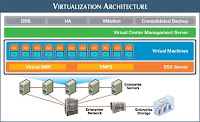
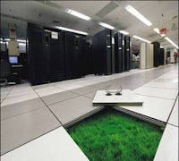

Publicado em 2009-09-04 13:55:00
Com o advento da virtualização de sistemas operativos (tecnologia que aliás já vem dos mainframes da década de 60) e a sua recente introdução (1998) nas plataforma de hardware "commodity", como o X86 (32 e 64 bits), têm vindo a ser desbravados novos caminhos e a surgir novos paradigmas aplicados à computação distribuída. Aspectos como a escalabilidade, robustez, flexibilidade, associados a menores custos e novos critérios de optimização, levam a que a virtualização tenha surgido no seio destas plataformas de hardware como o "santo-graal", para resolver questões como a capacidade de gerir múltiplos processadores e "cores" em grande escala e sendo suportados por sistemas operativos comuns, como é o caso do Linux.
Durante quatro décadas ou mais, o mainframe foi o melhor local para implementar a virtualização mas, nesse período, a definição de virtualização mudou, e a sua importância aumentou dramaticamente. Agora, a filosofia de virtualização trata principalmente sobre o abstrair a aplicação (software e infra-estruturas) da plataforma de hardware - e, paradoxalmente, isso fez com que o conceito de mainframe seja mais valioso e a plataforma mais aplicável do que nunca.
Mas este conceito de mainframe e a sua implementação na prática não está agora só ao alcance das tradicionais arquitecturas de hardware dos fornecedores de sistemas proprietários, como a pioneira IBM e outras.
Com as novas tecnologias de virtualização, de que se destaca a líder actual, a VMWARE, (pelo seu enorme avanço tecnológico sobre outros concorrentes, como a MicroSoft, XEN / Citrix, SUN, etc.), é perfeitamente possível disputar o mercado dos tradicionais mainframes, através de plataformas de virtualização assentes sobre hardware X86 Intel / AMD, desde que dotados de grande quantidade de recursos, nomeadamente processadores e memória.
Apenas como referência sobre a escalabilidade actual da plataforma de virtualização vSphere da VMWARE em particular, pode esta ser pensada como um grande mainframe de "software", usado para conceber e implementar um computador ou uma nuvem gigante (Cloud-Computing) que pode cuidar de necessidades de sistemas de TI de grande porte, a que só os mainframes tradicionais poderiam responder até ao momento.
Com o vSphere é possível entregar e garantir, além do desempenho e robustez de um mainframe, cargas e SLA´s de processamento gigantescos, suportados através de "clusters" de VMware.
Considerando a capacidade de "workloads", o vSphere pode actualmente suportar o desempenho de mais de 350.000 operações de I/O´s por segundo, a partir de um único cluster VM, o suficiente para lidar com a carga de processamento de toda a operação da rede Visa Internacional.
O software vSphere tem actualmente capacidades teóricas actuais de gerir um "cluster" de computadores com até 32 servidores físicos, 2.048 núcleos de processamento, e 32 TeraBytes de memória RAM, conforme especificações da VMware.
Só em aplicações de bases de dados a VMware assegura que poderão ser actualmente suportados por esta arquitectura, débitos de mais de 200.000 transacções por segundo.
Não me restam dúvidas que a tecnologia de virtualização irá constituir, no futuro próximo (estimo que a partir de 2012), a forma menos onerosa e mais flexível de lidar com enormes cargas de processamento e I/O´s, que antes só estavam ao alcance dos tradicionais mainframes, mas representa sobretudo a tecnologia que irá simplificar, optimizar e agilizar as infra-estruturas de TI do futuro, materializando e habilitando na prática o conceito de "cloud-computing", em que assentarão todos os serviços de software que a rede Internet e as Intranets irão prover.
A virtualização irá capacitar os novos mainframes do século 21 e o Linux será o sistema operativo multi-plataforma por excelência, que também pela sua versatilidade e capacidade extrema de escalar, poderá dotar tanto um simples dispositivo tipo o telemóvel (físico ou virtual), como habilitar os super-mainframes também virtualizados.
{kind=link}
{kind=link}